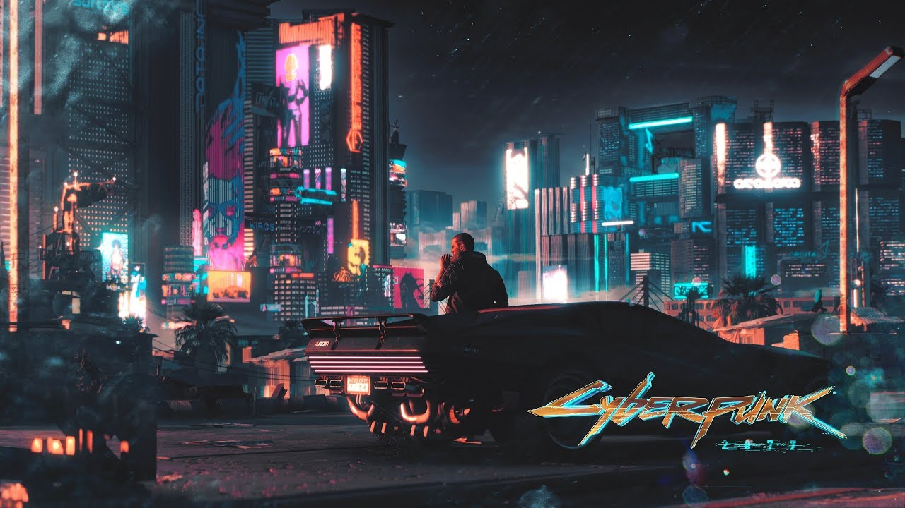
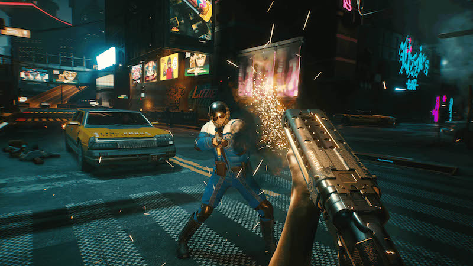
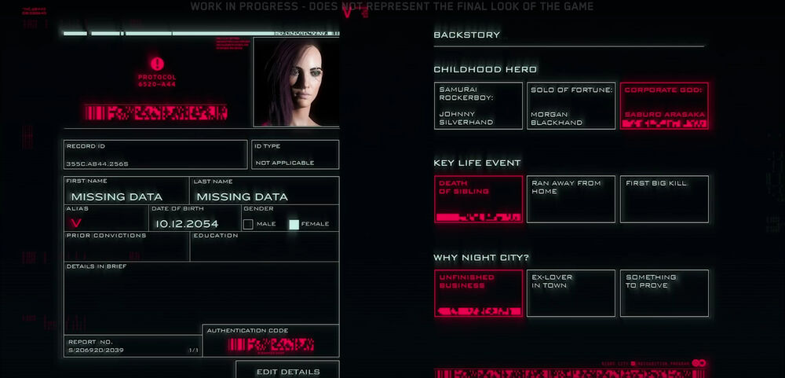
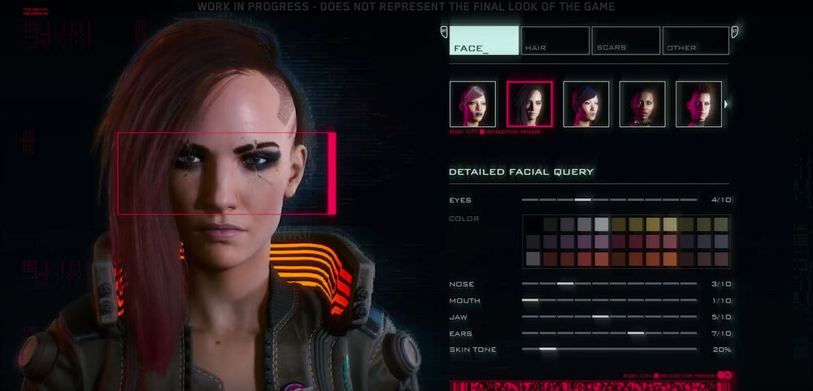
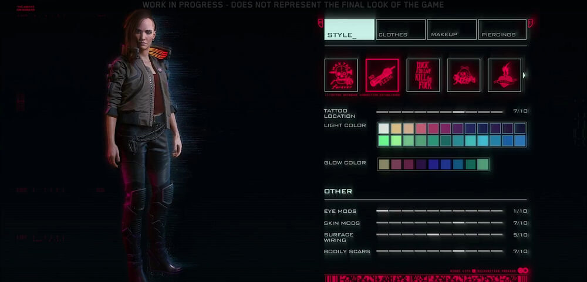
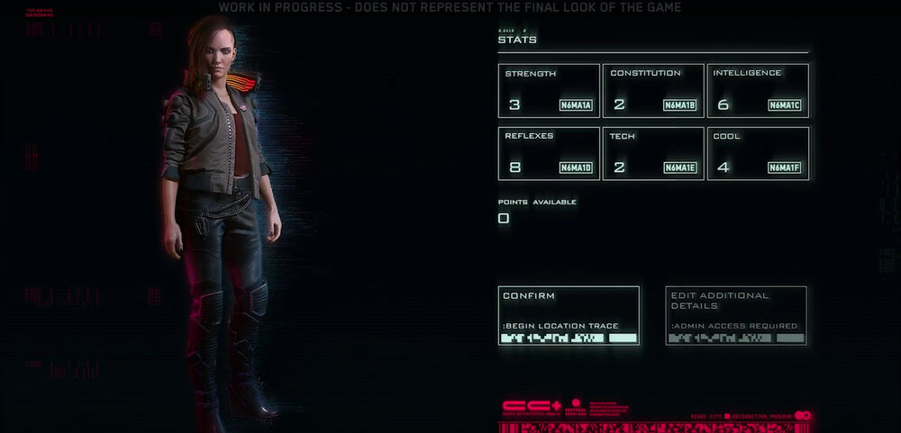

GAMEPLAY
Cyberpunk is an open world, non-linear RPG with an FPS style in which players are able to heavily customize their character to suit their play style. Gun play, exploration, player choice and activities such as hacking are to feature heavily throughout the game with missions, quests and objectives being completed in a variety of different ways.
One such example of gameplay is non-English speaking characters featured throughout Night City. Players may be required to purchase a translator implant to understand them, with varying levels of success based on the implant they buy.
The game was originally stated to be a single player experience with multiplayer elements. It was reported in early 2018 that the multiplayer components may have been scrapped,[1] however in June 2018 CD Projekt stated that they had multiplayer "in R&D" but it would not be included for the game's launch.
The world will have dynamic weather and a day/night cycle to make it truly immersive.
Perspective
The game is played primarily from a first-person perspective. A new combat system has been developed around this perspective that includes the use of guns, melee, powers, and even combat stimulants that grant additional bonuses, such as increasing speed. Players may choose a third-person perspective whilst driving vehicles, such as cars and motorbikes. Although players can utilize flying machines, these are all automated.
Attributes
Main article: V (Character)
Player characters will have attributes like Strength, which can be raised via leveling and installing cyberware. Skills and perks can also be selected; skills are related to performing actions - such as hacking, crafting, specific weapons, etc. - while perks can be unlocked with both Street Cred and XP.
During character creation, the player can select a gender and customize their character; customization can include depictions of breasts, buttocks, and genitalia, as well as various sizes and combinations of genitals. Options also include picking between a male or female sounding voice, while also adjusting the pitch. Other tabs that have further customization options include Birth Record, Biometric Scan (face, hair, scars, coloration), Appearance (style, clothes, makeup, piercings, tattoos, mods), and Biostats.
One can also choose from a set of background stories (Nomad, Street Kid, or Corporate) and other elements to fully flesh out their characters (like childhood hero, key life events, and what drove them to Night City), all of which will have an impact on the game. Selecting a background story doesn't lock a player into that for the rest of the story: if a player decides to betray their original background group, they can do so (like go from Street Kid to Corporate).
   Classes/Roles
Cyberpunk 2077 will feature a fluid class system, where V may primarily conform to a trio of skill trees, allowing the player to choose what best fits their playstyle and experiment, but is by no means locked into a set class.
- Netrunner: These are the elite hackers of the world, perhaps best suited to players who prefer a stealthy approach to dealing with problems. Their skills can grant them access to mundane objects like doors, to more intricate systems such as security and encryption, and even people's brains.
- Solo: Mercenaries whose skills focus on combat. They are strong and fast, and the most capable melee opponents.